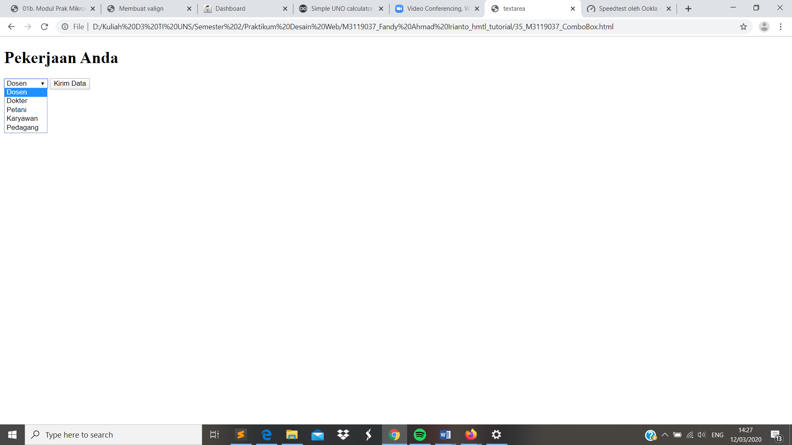

Combo Box
//Komponen lain dari form yakni Combo Box. Combo Box digunakan untuk menginput berupa pilihan. Hanya saja tampilan dari combo box miripn dengan tex box namun terdapat drop down button untuk menampilkan pililhan. Untuk membuat combo box dapat menggunakan perintah tag <select name="nama komponen"> dan diakhiri dengan </select>. Sedangkan untuk memilih option nya dapat dengan perintah tag <option value="nama"> diakhiri </option>
Codingan
<!DOCTYPE html>
<html>
<head>
<meta charset="UTF-8">
<title> textarea</title>
</head>
<body>
<h1> Pekerjaan Anda </h1>
<form method="post" action="">
<select name="select" value="pekerjaan">
<option value="dosen">Dosen</option>
<option value="dokter">Dokter</option>
<option value="petani">Petani</option>
<option value="karyawan">Karyawan</option>
<option value="pedagang">Pedagang</option>
</select>
<input type ="submit" name ="submit" value="Kirim Data" />
</form>
</body>
</html>
Tampilan Hasil Percobaan

Kesimpulan
Pada percobaan membuat Combo Box kali ini dapat kita simpulkan bahwa combo box memiliki tampilan seperti text box dan memiliki bentuk pilihan seperti radio button.Namun terdapat fitur down buttin untuk menampilkan pilihan.